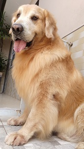
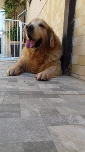
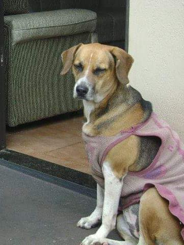
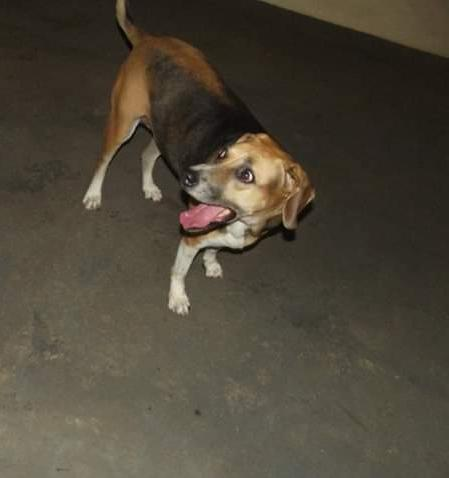
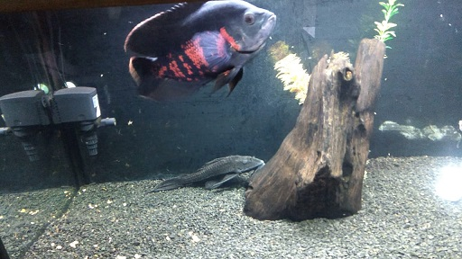
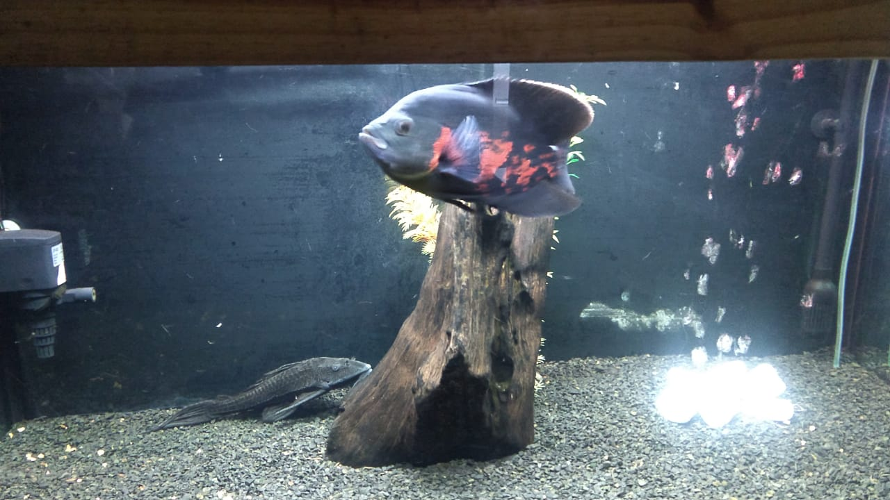

Amigos de quatro patas
Esse é o Sid, um golden de 6 anos, que sua maior diversão é uma garrafa pet ou uma bolinha. Adora morder o tornozelo, passar no meios das pernas das pessoas que entram aqui em casa e ser chato com a Nany, mas tráz uma alegria
pra casa que não tem igual.


Essa é a Nany, uma senhora de 11 anos, que adora brincar de morder, mas que ultimamente sua saúde não está das melhores, mas mesmo assim junto com o Sid, trazem a alegria pra casa.
As vezes ela da umas porradas no Sid pela chatice dele.


Esses não tem 4 patas, mas cuido com o mesmo carinho. O Cascão que é o peixe cascudo e o Olaf que é o peixe Oscar. Aquarísmo virou um hobby em minha vida á pouco mais de 3 anos, porém esses peixes estão comigo á 1 ano em um aquário de 200 litros.

